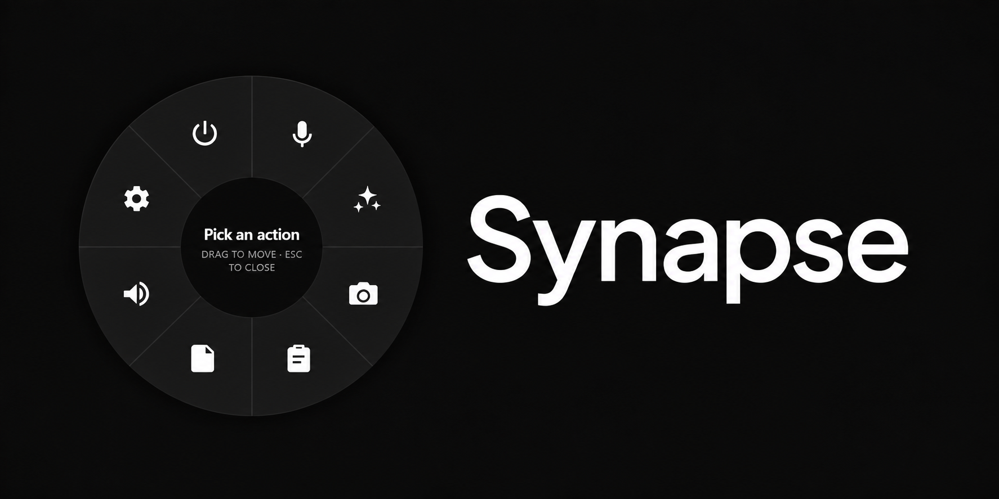
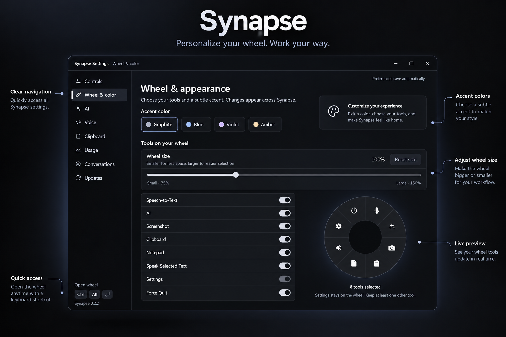
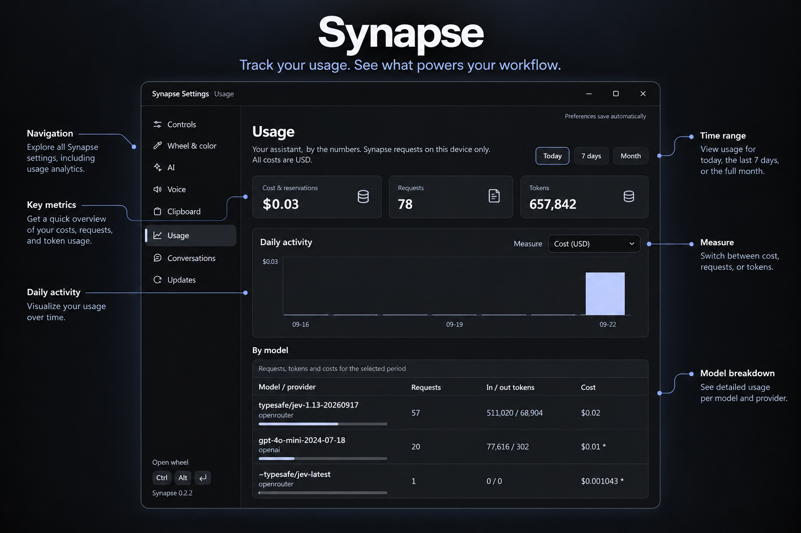

A shortcut to what comes next.
Speak a thought. Save a useful detail. Pick up where you left off. Your everyday tools, one shortcut away on Windows.
Windows x64 · Open the wheel to explore all eight tools.
From a thought
to the place it belongs.
The wheel brings eight tools to your cursor. Choose Speech-to-Text when typing would interrupt your flow, then keep working in the app you already have open.

-
Call up the wheel
Press Ctrl+Alt+Enter, then choose Speech-to-Text. The wheel opens where your cursor is.
-
Say what you mean
Dictation keeps listening until you press Enter or click the listening circle. Pauses do not end it by default.
-
Carry on from there
Synapse pastes the finished text into the previously focused app. Your words go back to where you were working.
A little more
your own.
Adjust the wheel’s colors and size, and choose the tools you want on it. These are the actual controls inside Synapse.
Keep rich notes in folders or open them as sticky notes. Search your clipboard history, pin a useful item, and paste it when you need it. Notes and clipboard history stay local.




Your provider.
A clearer view.
AI opens a voice orb and streams replies through your chosen provider: Anthropic, OpenAI, or OpenRouter. Connect your own API key; provider charges are separate.
See locally recorded requests, token counts, and estimated costs in Usage.
For dictation, an optional local speech recognition model is approximately 630 MB.
Make room for
your next thought.
Get the current Windows x64 release of Synapse.
Download for WindowsOne shortcut brings together dictation, AI, screenshots, clipboard history, notes, speech, settings, and Force Quit.
A paid release is planned as one purchase per major version, with optional paid upgrades for future major versions. Pricing, paid features, and the release date are not announced.